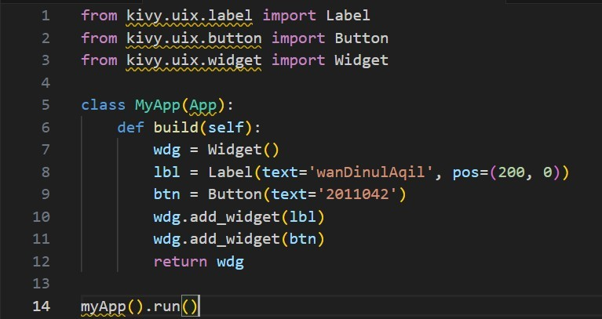

Tugas Pemograman Mobile | IMAM MUSLIM
 Penjelasan Baris Kode `from kivy.uix.label import Label : Mengimpor komponen **Label** dari Kivy, digunakan untuk menampilkan teks.`from kivy.uix.button import Button : Mengimpor komponen **Button**, digunakan untuk membuat tombol.
`from kivy.uix.widget import Widget : Mengimpor **Widget dasar**, yaitu kontainer untuk komponen lain.
`from kivy.app import App : **WAJIB** untuk menjalankan aplikasi Kivy, kelas utama harus turunan dari `App`.
`class MyApp(App) : Mendefinisikan kelas utama aplikasi yang mewarisi dari `App`.
`def build(self) : Fungsi ini digunakan untuk membangun tampilan awal saat aplikasi dijalankan.
`wdg = Widget() : Membuat kontainer utama tempat label dan tombol akan ditempatkan.
`lbl = Label(...) : Membuat label teks dengan tulisan `'wanDinulAqil'` dan posisi `(200, 0)` di layar.
`btn = Button(...) : Membuat tombol dengan teks `'2011042'`, posisi default (0,0).
`add_widget(...) : Menambahkan label dan tombol ke dalam widget utama `wdg`.
`return wdg : Mengembalikan tampilan utama yang akan ditampilkan di layar.
`MyApp().run() : Menjalankan aplikasi. Ini akan memanggil `build()` dan menampilkan hasilnya.